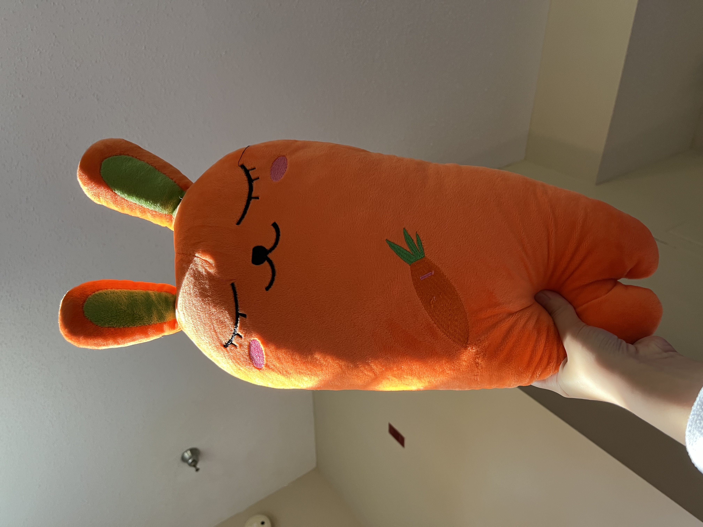

Everyday Representations
Week 3
Hoai Ngoc Vo
Image 1
Citation: J.D. Salinger, “The Catcher in the Rye”
This is a cover image of the book “The Catcher of the Rye”, in which the main subject is a representation of a horse in the story. I think this cover image represents its original object quite accurately. However, of course, the artist has filtered out details like the color, shadow, muscles, etc. The palette is paige and orange which is very different from the original object, however in this case it is successful because it makes the image stand out longer in viewers’ memories and leaves a strong first impression. The horse in the original 3D digi animal form is simplified through organic lines, and shapes, creating a flowyness feel that contracts with its original form. Far away is also a simplified drawing of the city where the story is set. It is a successful representation by intentional selection but at the same time rightfully represents its original object.
Image 2
Citation: Hoai Ngoc Vo, “Set of Christmas Candles”
This is a set of candles for the Winter Holiday - Noel, which carves an X-mas tree, Santa Claus, and a house covered in snow. I think to a degree, this is a good representation of the original objects. However, it is stylized, and distorted in a more chibi scale with extra simplification for cuteness instead of a 1-1 representation. Some details have been filtered out including the star on top of the tree, Santa bag of presents, door of the house. However, the color is well present and accurate. This palette reminds viewers of the holiday and these original objects. I don’t think it is misleading. In a way, it is successful since it accomplishes the purpose of the creator which creates mini-model candles that are meant for the holiday season. I believe they could have done a better job in the details, but this also means the price will increase as well.
Image 3

Citation: Hoai Ngoc Vo, “My Carrot Squishy”
This is my carrot squish toy that my mom gifted me from the travel office. I don’t think it is an accurate presentation because it has been personified to look like a human form. It is also a combination of the rabbit idea, which is an animal that loves carrots. The ears were added, with eyes, nose, mouth, and blush, as well as two little legs. The creator probably did not intend to make the exact carrot, but wants it to be massively different except for a carrot embroidery on its body. It does contain some distortions, for example, the changes in sizes and additional features that belong to another subject. However, I think it is a successful representation of its purpose. This squish is meant for children or those who love cute animals, and objects. By personifying the carrot as an adorable rabbit, the target audience’s attention is caught and curious about this new combination.
© 2024 Hoai Ngoc Vo